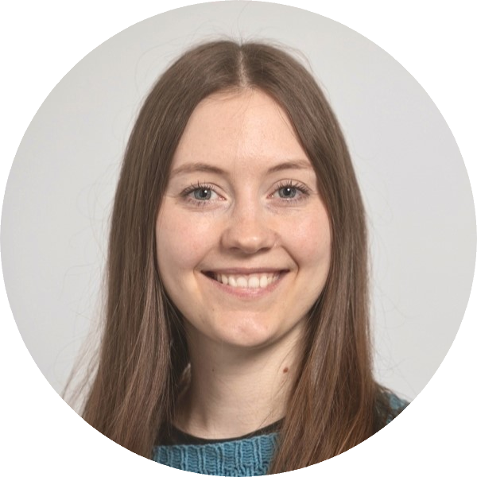

Bridging Human Experience and Code.
I am a cand.it based in Aalborg, specializing in Front-End Development, UX Design, and Digitalization. By combining a deep understanding of human behavior with strong technical execution, I build digital solutions that are intuitive, scalable, and genuinely useful.

Where Humanities meet IT
My path into software development is not strictly traditional and that is my greatest strength. As a cand.it with an MSc in Digitalisering og Applikationsudvikling and a BA in Kunst og Teknologi from Aalborg Universitet, I have been trained to see the full picture. I don’t just write code; I translate human needs into functional technology.
In my recent Master's thesis, I deep-dived into the interaction design of Conversational AI, exploring how to make complex, automated systems feel natural and user-centered. This research perfectly encapsulates my approach: utilizing rigorous qualitative methods (like Reflexive Thematic Analysis) to inform sharp, effective software architecture.
Whether I am designing a front-end interface in React/JavaScript, optimizing a database in SQL, or conducting a heuristic usability evaluation, my focus remains the same: creating technology that actually works for the people using it. When I am not behind a screen, you will likely find me applying this same structured creativity to physical crafts; sculpting, upcycling, and engineering custom garments.
I enjoy translating complex technical possibilities into experiences that feel understandable, purposeful, and human. My process moves between research, prototyping, implementation, and reflection, with attention to both how a system works and how it feels to use.
Educational Background
MSc in Digitalisation and Application Development
A technical degree centered on software engineering, UX research, and digital strategy. It covers how to program and build complex digital applications from the ground up while ensuring they are intuitive and user-friendly.
BA in Art and Technology
A creative degree focused on the intersection of human experience, physical design, and interactive technology. It is about understanding how people interact with their environment and building tangible, interactive prototypes.
My Expertise
My work is at the intersection of technology and human experience. I specialize in:
Front-End & Software Development
I turn complex logic into clean, accessible interfaces. My technical foundation spans Python, Java, C#, and JavaScript, allowing me to build robust applications from the database to the browser.
UX Research & Interaction Design
I eliminate guesswork. Using Grounded Theory, scenario-based testing, and qualitative research, I ensure that development hours are spent solving the right problems for the user.
Digitalization & Strategy
I bridge the gap between developers and end-users. I speak the language of both IT and the humanities, making me highly effective at translating business requirements into technical solutions and guiding digitalization processes.
Let's Connect
I am actively seeking new opportunities in the Aalborg area. Whether you are hiring for a permanent role (Software Developer, UX Designer, Digitalization Consultant) or looking to discuss Conversational AI and interaction design, I would love to connect.
I am open to informal chats, collaborative projects, and strategic internships (virksomhedspraktik) where I can apply my background in AI and UX to your current challenges.
Download CV (PDF)